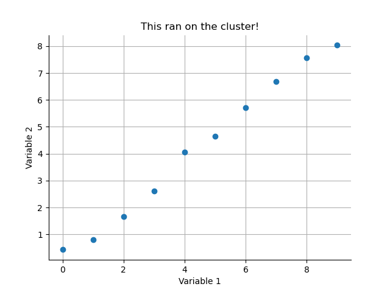
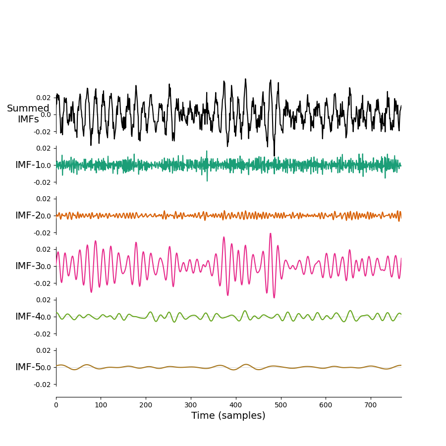

Python
Python is a interactive programming language known for being flexible and (relatively) simple to use. A vast range of scientific applications have be built in and around Python.
Some of the most common are:
- numpy: fundamental array computing in python
- scipy: fundamental algorithms in python
- pandas: manipulation and analysis of data tables
- scikit-learn: efficient tools for machine learning
and many, many more. Many Python packages are distributed on PyPI.org
Python versions on BEAR
Python versions up to 3.10 are supported as loadable modules on BEAR Apps. These can be loaded into a terminal session ready for use:
This will be sufficient to run a pure Python script inside that terminal session. Frequently we'll want to load a wider range of modules to use in the script. There are several ways to go about this.
We could load these modules one at a time, ensuring that any versions relating to Python, FOSS or GCCCore all match each other.
Note
Modules will load any relevant dependencies at the same time, so loading scikit-learn will also load the relevant Python version into the session. It is best to trust the dependencies built into the module load system and only define the minimum necessary modules in your session.
Or we can load a bundle of applications. The SciPy-bundle includes a bunch of packages including numpy, scipy and pandas.
iPython is a powerful Python console that you can use for interactive sessions in the terminal.
module load bear-apps/2022a
module load SciPy-bundle/2022.05-foss-2022a
module load matplotlib/3.5.2-foss-2022a
module load IPython/8.5.0-GCCcore-11.3.0
You can then start an iPython session from a terminal:
and start running some Python code using your loaded libraries:
import numpy as np
import matplotlib.pyplot as plt
x = np.arange(10)
y = np.random.randn(10,)/2 + x
plt.figure()
plt.plot(x, y, 'o')
plt.show()
You can also save some Python code into a file and run it on the command line (this is very useful for running jobs on the cluster later...). If we save the code above into a file called my_plot.py - we can run it in the terminal using:
Submitting Python jobs to the cluster
We need to prepare two things to run Python jobs on the BlueBEAR cluster: we need an executable Python script to run the analysis and a bash script to prepare an environment and actually run our code.
Let's make a simple example. The following script creates and saves out a simple scatter plot of some random data.
import numpy as np
import matplotlib.pyplot as plt
x = np.arange(10)
y = np.random.randn(10,)/2 + x
plt.figure()
plt.plot(x, y, 'o')
plt.title('This ran on the cluster!')
plt.xlabel('Variable 1')
plt.ylabel('Variable 2')
for tag in ['top', 'right']:
plt.gca().spines[tag].set_visible(False)
plt.grid(True)
plt.savefig('my_cluster_figure.png')
We can save this script as quick_python_plot.py. Next, we need a bash/slurm script to submit and run our Python code.
#!/bin/bash
#SBATCH --account quinna-example-project
#SBATCH --qos bbdefault
module purge; module load bluebear
module load bear-apps/2022a
module load SciPy-bundle/2022.05-foss-2022a
module load matplotlib/3.5.2-foss-2022a
python quick_python_plot.py
We can save this as submit_quick_python_plot.sh in a directory next to our Python code (Remember to update the projecet on line 2 to a BEAR project that you can access!).
You can monitor the progress of your job in the active jobs tracker on BEAR portal. Once it has finished you should find a nice figure saved in your directory.

JupyterLab
Interactive python notebooks are available to run as a JupyterLab GUI App through the BEAR Portal. The pre-installed Python modules can be loaded as modules in the notebook session.
Only the pre-installed modules available in BEAR Apps are installable in the JupyterLab GUI App.
Virtual environments
More involved analyses may required dependencies or package versions that aren't available on BEAR Apps. The next optionn for these analysis is to use virtual environments as described on the BEAR Technical Docs.
The following bash script (adapted from the main docs) loads the standard BEAR modules for MNE-Python, creates a virtual environment and then installs the EMD package with pip:
#!/bin/bash
set -e
# Load our core modules from BEAR
module purge; module load bluebear
module load bear-apps/2021b
module load Python/3.9.6-GCCcore-11.2.0
# Prepare path locations and name for virtual environment
export VENV_DIR="${HOME}/virtual-environments"
export VENV_PATH="${VENV_DIR}/my-virtual-env-${BB_CPU}"
# Create a master venv directory if necessary
mkdir -p ${VENV_DIR}
# Check if virtual environment exists and create it if not
if [[ ! -d ${VENV_PATH} ]]; then
python3 -m venv --system-site-packages ${VENV_PATH}
fi
# Activate the virtual environment
source ${VENV_PATH}/bin/activate
# Perform any required pip installations. For reasons of consistency we would recommend
# that you define the version of the Python module – this will also ensure that if the
# module is already installed in the virtual environment it won't be modified.
pip install emd==0.5.4
You can save this into a shell script such as init_myenv.sh and run it using source init_myenv.sh to create the environment. You can now run init_myenv.sh when opening a new terminal to initialise an environment before running scripts or interactive sessions. The code above is all you need for this option, you can add or change the dependencies in the script as you need.
Python on the cluster
You can also adapt the script to submit jobs to the cluster. For this, we'll need to add the appropriate slurm commands to the start of the script and add a line running our analysis to the end. That might look something like this:
#!/bin/bash
#SBATCH --account quinna-example-project
#SBATCH --qos bbdefault
set -e
# Load our core modules from BEAR
module purge; module load bluebear
module load bear-apps/2021b
module load Python/3.9.6-GCCcore-11.2.0
# Prepare path locations and name for virtual environment
export VENV_DIR="${HOME}/virtual-environments"
export VENV_PATH="${VENV_DIR}/my-virtual-env-${BB_CPU}"
# Create a master venv directory if necessary
mkdir -p ${VENV_DIR}
# Check if virtual environment exists and create it if not
if [[ ! -d ${VENV_PATH} ]]; then
python3 -m venv --system-site-packages ${VENV_PATH}
fi
# Activate the virtual environment
source ${VENV_PATH}/bin/activate
# Perform any required pip installations. For reasons of consistency we would recommend
# that you define the version of the Python module – this will also ensure that if the
# module is already installed in the virtual environment it won't be modified.
pip install emd==0.5.4
# Python script to be run.
python emd_example.py
Note the additional SBATCH options at the start and the python emd_example.py at the end. We can save this script as 'submit_emd_example.sh`.
We'll need a Python Let's use this as an example. We can save the following script as emd_example.py on RDS.
import matplotlib.pyplot as plt
import numpy as np
import emd
# Define and simulate a simple signal
peak_freq = 15
sample_rate = 256
seconds = 10
noise_std = .4
x = emd.simulate.ar_oscillator(peak_freq, sample_rate, seconds,
noise_std=noise_std, random_seed=42, r=.96)[:, 0]
x = x*1e-4
t = np.linspace(0, seconds, seconds*sample_rate)
# Run a mask sift
imf = emd.sift.mask_sift(x, max_imfs=5)
fig = plt.figure()
emd.plotting.plot_imfs(imf[:sample_rate*3, :], fig=fig)
fig.savefig('my-emd-example.png')
Now, we can submit our job to the cluster.
You can monitor the progress of your job in the active jobs tracker on BEAR portal. Once it has finished you should find a nice new figure saved in your working directory.
